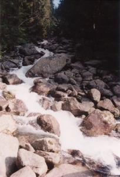

czas przejścia
odcinka:
(wariant a)
1:00
czas
powrotu
odcinkiem:
(wariant a)
0:50
|
|
Do Popradzkiego Stawu (Popradské pleso) możemy dojść trzema wariantami.
Polecam osobiście na dojście wariant a, jako najszybszy i najłatwiejszy, a na powrót b,
jako najładniejszy pod kątem widoków; zaś dla nie lubiących tłoku,
ceniących spokój i ciszę najlepszy będzie wariant c.
|
|

czas przejścia odcinka:
1:00
czas powrotu odcinkiem:
0:50
|
a. od przystanku elektriczki/parkingu Popradské pleso - drogą asfaltową
Wysiadłszy z elektriczki na wysokości 1245m idziemy asfaltową, szeroką
i równą drogą równo pod górę (w kilku miejscach jedynie robi się stromiej).
Najpierw mijamy tory, potem szlaban i budynki ujęcia wody, oraz mostek na
stosunkowo niewielkim tutaj Popradzie, który zaczyna się kilkaset metrów dalej,
w miejscu gdzie na wysokości 1302m łączą się potok Krupa, wypływający z Popradzkiego Stawu,
i Potok Mięguszowiecki (Hincov Potok), biorący początek w Hińczowym Stawie.
Ponad kilometr od mostka, na wyskości ok. 1400m przechodzimy przez drugi, juz na potoku
Krupa, po czym szosa zwija się serpentyną w dwa głębokie zakręty. (Nie ścinamy
ich, postępujemy za znakowanym szlakiem!!!) Stąd ponad drzewami otwiera się widok na
Dolinę Mięguszowiecką, ograniczającą ją Grań Baszt i wspaniałe skały, na które pną się
odważnie drzewa. Można tu odpocząć, przysiadając na ławeczkach.
Za nami już ponad połowa drogi: wkrótce szosa staje się całkiem płaska,
wychodzimy na bardziej odsłoniętą przestrzeń, więc nie zasłaniane
przez drzewa oczom naszym ukazują się góry: po prawej wspaniała, pionowa
ściana Osterwy (Ostrva) - na której wypatrzeć można taterników, szczyty wokół
Doliny Mięguszowieckej, koronkową grań podwieszonej bajecznie nad nami
Doliny Złomisk. Stąd do Stawu i schroniska już tylko kilkaset metrów.
Wariant: Na 10 minut przed Popradzkim Stawem od naszej asfaltówki odchodzi w prawo
żółty szlak na Symboliczny Cmentarz Ofiar Tatr, niesamowicie piękne i
dające do myślenia miejsce. Jeżeli planujemy wracać tą samą drogą, warto jednak zostawić
sobie zwiedzenie go na powrót, jeśli wystarczy nam sił i czasu. Można będzie zwiedzić go również
gdy na powrót wybierzemy wariant b lub c.
|  |
Potok Krupa w Dolinie Mięguszowieckiej, widziany z niebieskiego szlaku
fot. Pacyfka
powiększenie zdjęcia |
|
|

czas przejścia odcinka:
1:20
czas powrotu odcinkiem:
1:10
|
b. Ze Szczyrbskiego Jeziora Magistralą
Strzałki, kierujące na szlak, znajdziemy w pobliżu Jeziora
(po wyjściu ze stacji elektriczki/autobusów na wprost).
Po parunastu minutach szlak przechodzi mostem nad potokiem Młynica, opuszcza asfalt i wchodzi w las.
Droga jest szeroka i wygodna, równo wspina się pod górę. Otaczają ją wspaniałe, potężne świerki,
nastroszone brodami szarych porostów. Po półgodzinie
na wysokości 1499m mijamy drogowskaz - w prawo, w dół, odchodzi zielony szlak - wariant c.
Idziemy dalej szlakiem czerwonym - zbudowanym z dużych kamieni,
zupełnie poziomym, trawersującym zbocze doliny. Wkrótce drzewa - ogromne świerki, limby i modrzewie -
odsłonią nam widoki na leżące dużo niżej dno Doliny Mięguszowieckiej,
na położone po jej drugiej stronie Osterwę, Tępą i Wysoką. Najbardziej
niesamowite i powalające wrażenie robi zawieszona nad Doliną Mięguszowiecką
Dolina Złomisk i postrzępiona grań otaczających ją szczytów i przełęczy.
Szlak, wiodąc między kosodrzewiną, nieco się obniża, przekracza Potok Mięguszowiecki
(Hincov Potok) - z mostka można wypatrzyć pstrągi w krystalicznej wodzie - i dochodzi do asfaltówki
tuż przed Stawem i Schroniskiem.
|
|

czas przejścia odcinka:
1:30
czas powrotu odcinkiem:
1:20
|
c. od Szczyrbskiego Jeziora pół godziny Magistralą, po czym 45 minut zielonym szlakiem
Strzałki, kierujące na szlak, znajdziemy w pobliżu Jeziora
(po wyjściu ze stacji elektriczki/autobusów na wprost).
Po parunastu minutach szlak przechodzi mostem nad potokiem Młynica, opuszcza asfalt i wchodzi w las.
Droga jest szeroka i wygodna, równo wspina się pod górę. Otaczają ją wspaniałe, potężne świerki,
nastroszone brodami szarych porostów. Po półgodzinie
na wysokości 1499m osiągamy drogowskaz - w prawo, w dół, odchodzi nasz zielony szlak.
Wygodną, choć ukośną ścieżką obniżamy się na dno doliny dzikim, przepięknym lasem
- otaczają nas wspaniałe, potęne drzewa, limby i świerki. Następnie szlak
wiedzie wzdłuż Mięguszowieckiego Potoku (Hincov potok), który paręset metrów
dalej w dół łączy się z potokiem Krupa wypływającym z Popradzkiego Stawu, dając początek
wielkiej rzece Poprad, największemu z dopływów Dunajca.
Wkrótce szlak przekracza potok i zaczyna podchodzić ukośnie pod górę, aż dojdzie do
szosy. Stąd do schroniska już tylko kilkaset metrów. Możemy dojść tam
asfaltem bądź przeciąwszy go za zielonymi znakami zejść nad staw i jego brzegiem dotrzeć
do Chaty.
|
|
|
Popradzki Staw (Popradské pleso), otoczony limbami i świerkami, leży na wysokości
1494m. W jego zielonych wodach odbijają się ściany Osterwy. Hotel górski znany jako
Chata Popradské Pleso albo Chata Kapitana Morávku został nazwany tak na cześć
partyzanta walczącego w czasach drugiej wojny światowej. Budynek jest jednym
z ładnejszych schronisk w słowackich Tatrach. Polityka turystyczna wewnątrz
jest zmienna i różna każdego sezonu; w roku 1999 udostępniano tu podłogę
na poddaszu za 170 koron, co było najniższą ceną w Tatrach Wysokich; w następnym
roku zrezygnowano z tego w ogóle. Dla majętnych jest tu restauracja, bar, przed
budynkiem zaś stoły, ławki i budki handlujące wszelkim dobrem.
|
|
|


{kind=link}
{kind=link}
{kind=link}
{kind=link}
{kind=link}
{kind=link}